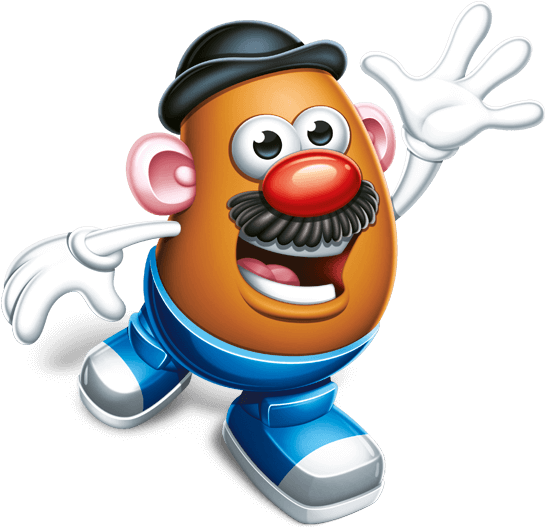
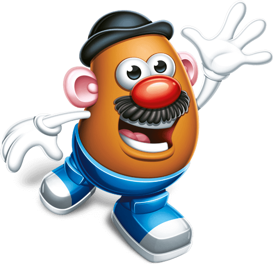

Mr. Potato Head
1962 - present

In the early 1940s, Brooklyn-born toy inventor George Lerner came up with
the idea of inserting small, pronged body and face parts into fruits and
vegetables to create a "funny face man". Some speculate he got the idea
from his wife's nephew Aaron Bradley, who was seen placing sticks inside
of potatoes in the family garden. Lerner would often take potatoes from
his mother's garden and, using various other fruits and vegetables as
facial features, he would make dolls with which his younger sisters could
play. The grape-eyed, carrot-nosed, potato-headed dolls became the
principal idea behind the plastic toy which would later be manufactured.


 
